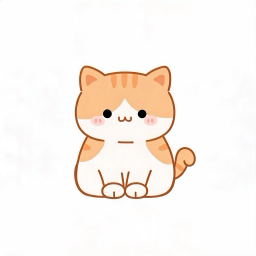

示例猫♀
🐱 中华田园猫 · 已绝育
2岁3月年龄
4.8kg体重
682天陪伴
↗ 稳中有增
爱睡懒觉的小馋猫，最喜欢窝在阳台晒太阳。
可分享海报卡（ADR-021/022/025）+ 首页轮播门面。头像光晕 / 名 + 性别 / 物种 chip / 年龄·体重·陪伴胶囊 / 体重趋势 band / 简介 / 水印。萌宠 + 轻健康，绝不含费用 / 病史。
⚠ 真相源是 canvas（src/petCard.js）；此卡为 HTML 静态参照，比例近似、改它须回写 petCard.js。
